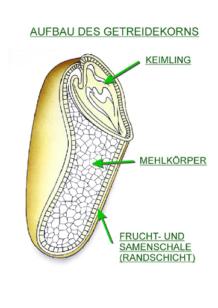

Kohlenhydrate
Start
Gütekriterien
1. Fest/flüssig
- Frucht ist immer besser als der gepresste Saft
- Ganze Frucht enthält mehr Nährstoffe
- Zucker gelangt aufgrund intakter Struktur der Balasestoffe langsamer in Kreislauf
- Phlorizin aus Schale nicht mehr in Saft enthalten
2. Grad der Verarbeitung
- Aufnahme in Ursprungsform in der Regel besser
- Ausnahme: Schneiden/Kochen: Beispiel: Lycopin aus Tomaten erst durch Erhitzen dem Körper zugänglich
3. Ballaststoffe
- Bestandteil pflanzlicher Zellen (Kohlenhydrate) die der Körper nicht verdauen kann
- Ziel: Kohlenhydrate zu Ballaststoff-Verhältnis: unter 10:1
- Basmati Reis: 78g KH, 1.4g Ballaststoffe. 56:1-Verhältnis
- Linsen: 41g KH, 17g Ballaststoffe. 2.4:1-Verhältnis
4. Glykämischer Index
- kurz: GI
- gibt an, wie schnell Kohlenhydrate vom Körper verdaut werden
- schnell verdauliche KHs führen zu schädlichem Blutzuckerlevel und Insulinspitzen
Brot und Haferflocken
- Am Beginn steht ein Getreidekorn (Weizen, Roggen oder Dinkel)
- Korn wird gemahlen, sodass meiste wertvolel Stoffe auf der Strecke bleiben
- Überbleibsel: hauptsächlich Stärke (lange Glukoseketten)
- Mehltypen: Typ 405, 550, 1050 usw.: Auskunft über Mineralstoffgehalt des Mehls (Typ 405 nahezu keine
Nährstoffe, 405 mg pro 100 g Mehl)
Brotwahl
- Ideal: Grobkörniges Vollkornbrot
- Er kommt nicht nur auf Nährstoffreichtum an, Prozess der Verdauung spielt ebenfalls eine Rolle
- Je kräftiger Korn gemahlen, desto feiner werden Partikel und feinere Partikel lassen sich besonders leicht
und rasch verdauen, KHs gelangen sehr schnell ins Blut
- Gilt auch für feingemahlenes Vollkornbrot
- Grobkörniges Vollkornbrot: intakte Hülle des Korns bildet heilsame physikalische Barriere: umschließt die
Kohlenhydrate des Mehlkörpers und stellt Hindernis für Verdauungsenzyme dar, an energieliefernde KHs zu
gelangen, um sie in Einzelbausteine (Glukosemoleküle) zu zerlegen
- Stoffe, die beim grobkörnigen Vollkornbrot erhalten bleiben
- Folsäure (B-Vitamin)
- Magnesium, Selen
- Omega-3-Fettsäuren
- Fehlende Nährstoffe tragen zu Übergewicht bei, es folgt ein "Nährstoffhunger"
- Achtung: VK-Brot sättigt nur nur wegen den Nährstoffen so gut, sondern auch wegen den Ballaststoffen
Samenkorn
Besteht aus stärkereichem Mehlkörper mit einigen wenigen Vitaminen, Mineralien und anderen Substanzen. Meiste
wichtige Stoffe befinden sich in Samenschale sowie im Keimling.

Haferflocken
- Haferflocken bestehen aus gerollten Getreidekörnern (Hafer)
- größere Oberfläche der Flocke bietet Verdauungsenzymen größere Angriffsfläche
- Haferflocken enthalten reichlich Ballaststoff "Beta-Glucan": sobald Beta-Glucan in Kontakt mit Wasser kommt,
entsteht schleimiger Brei (Haferschleim/Oatmeal) (Vorgang vollzieht sich spätestens im Körper)
- Zähflüssiges Beta-Glucan-Gel hat 2 Funktionen:
- verlangsamt Aufnahme der Kohlenhydrate
- hemmt Absorption von Cholesterin (senkt damit den Cholesterinspiegel)